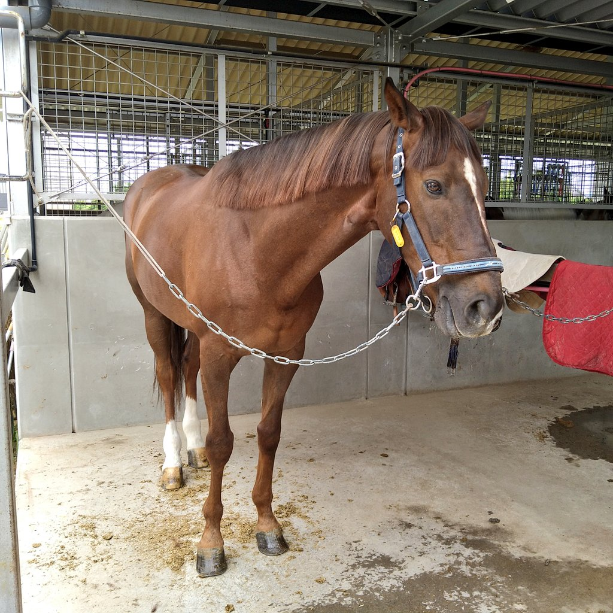
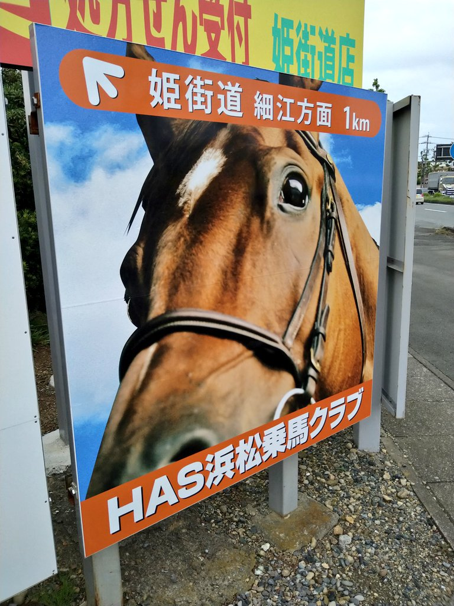

浜松乗馬クラブ(HAS)で45分乗馬体験してきた。スタッフさんに聞くと、やっぱりウマ娘の効果なのか、若い20〜30代のお客さんが増えてるらしい。今日はエディ君という中型の馬に乗ったんだけど、思ってたより大人しくて乗ってて怖くなかったし、指示もきちんと聞いてくれた。
🐴 乗馬ログ
乗馬体験の記録です。
スタッフさんの指示聞きながら円形コースを歩いたり止まったりした。最初は馬に乗ってるというより、自分の身体が荷物として馬に乗られている感じで、馬の動きに合わせて上半身でバランス取ってあげると馬も楽そうに歩いてくれて、乗りこなしてる感じがあって楽しかった。
馬に乗る時はただ跨るんじゃなくて、お尻から太ももにかけての脚全体を馬の身体にくっつけて体重を預ける感じで、運動体として馬に人が一体化する感覚がつかめると超楽しい。歩いたり走ったりするのはあくまで馬だから、人は背負いやすくて揺れにくいリュックに徹するイメージ。主役は馬なんですね。
終わった後厩舎を案内してもらったら、なんとスペシャルウィークがお父さんのクラウド君という子がいて、毛並みが良くてメッチャイケメンでした。また会いに来たい。馬上競技に出ている現役だそうで、浜松の人ならHASの看板で見たことあるかも。
でまあ、わりと楽しかったし来月も来ます🥰

